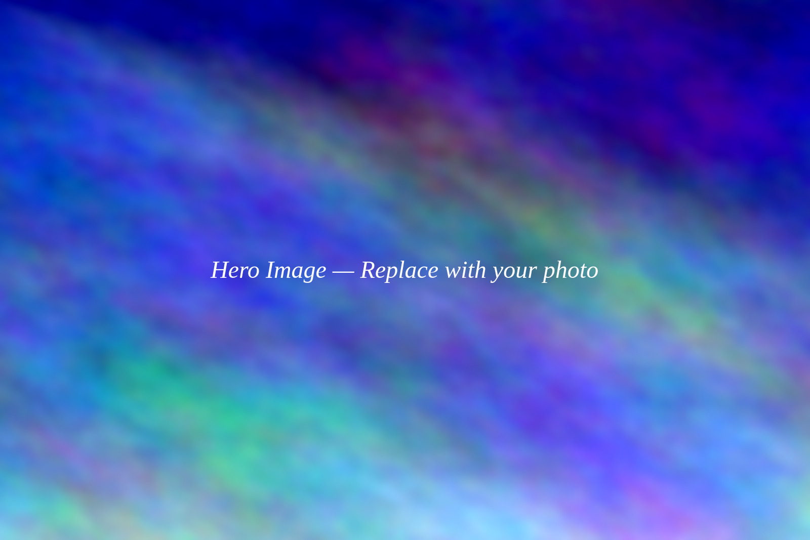

Exposure: 0.0 EV
Well exposed — nice balance!

Moderate DOFGallery
Click a photo to load it into the simulator
ISO. Aperture. Shutter Speed. Three settings, one perfect exposure.
Exposure: 0.0 EV
Well exposed — nice balance!

Moderate DOFClick a photo to load it into the simulator